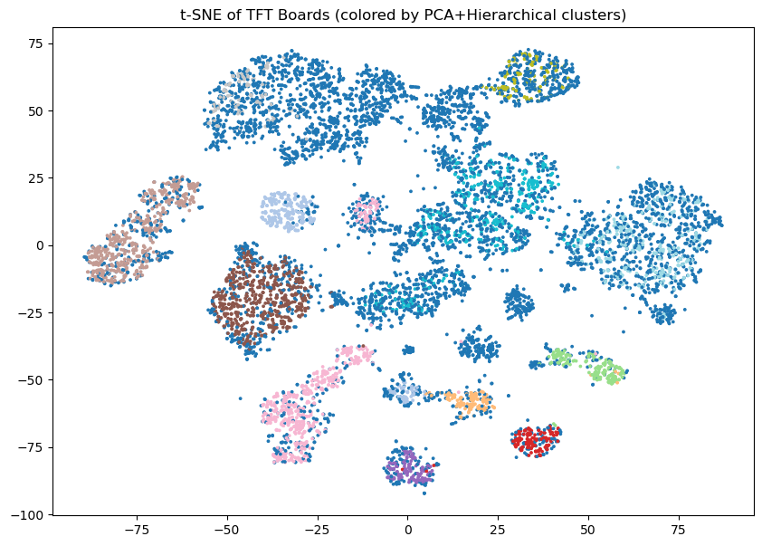

#Import packages this file uses
import pandas as pd
import ast
import hdbscan
import numpy as np
import matplotlib.pyplot as plt
from sklearn.preprocessing import MultiLabelBinarizer
from sklearn.manifold import TSNE
from sklearn.decomposition import PCAUnsupervised Learning
Introduction:
In this section, I will be using awnsering the following data science questions: What are meta comps among top level TFT player boards? What are meta comps among players who place top 4?
Champions in TFT have unique abilites and share types. A basic strategy is composing a team of unit that share traits because of bonuses given to units that share traits. For example, in Set 15, Ahiri and Jinx are both Star Guardians. When they are on the board together, they each get a unique bonus. The more Star Guardians are on the board, the greater the bonus. This aims to find common champion pairings at top level play. Originally, I was going to use hierachial clustering, but I switched over to DBSCAN.
Using my cleaned dataset, I created a new binary dataset that showed how many frequency of unit appearance.
My main issue was the size of the dataset. Original shape = (32455, 63) which would cause Jupyter to take to long or outright crash. So I decided to first remove duplicates and then perform PCA (Principal Component Analysis) if necessary. My reasoning for this is that duplicates do not improve the performance or content of DBSCAN while PCA removes potentially useful data. Removing the duplicates was the right call, cutting the shape down to (10757, 31). This is about a third of what we started but it makes sense. We are only looking at the list of units a player employed without consideration of other variables such as star level, items, or auguments. Despite the games innate RNG, top players are very consistent at bulding top level meta comps.
#Methods HDBSCAN (Hierarchical Density-Based Spatial Clustering of Applications with Noise) - HDBSCAN is a clustering algorithm build upon DBSCAN.
TSNE -
#Results Section: Below are the HDBSCAN clusters shown in TSNE form.
Below are the 13 clusters produced. The left hand side is the units name and the right hand side is the frequency of appearance.
=== Noise (cluster -1) === Braum 0.411457 Swain 0.389261 Udyr 0.342908 Shen 0.312061 XinZhao 0.292639 Sett 0.289212 LeeSin 0.279745 Zyra 0.278603 Leona 0.269463 Rell 0.260976 dtype: float64
=== Cluster 0 === Malphite 0.986595 Janna 0.949062 Ziggs 0.790885 Sivir 0.772118 Shen 0.764075 Ryze 0.584450 JarvanIV 0.546917 TwistedFate 0.337802 KSante 0.300268 Neeko 0.249330 dtype: float64
=== Cluster 1 === Ryze 0.98750 JarvanIV 0.98125 Akali 0.95625 Darius 0.85625 Kennen 0.85000 Senna 0.77500 KSante 0.71875 Aatrox 0.61250 LeeSin 0.41875 Janna 0.19375 dtype: float64
The core of Cluster 1 is Ryze, JarvanIV, Akali, Darius, Kennen, and KSante. Aatorox and LeeSin are secondary. While Janna is a fringe choice.
=== Cluster 2 === Kobuko 1.000000 Udyr 0.990950 Aatrox 0.977376 Ryze 0.927602 JarvanIV 0.809955 Senna 0.733032 Janna 0.705882 Yasuo 0.411765 KSante 0.285068 Volibear 0.194570 dtype: float64
Kobuko is the most valuable unit of Comp 2. Udyr, Aatrox, and Ryze are also staples.
KSante and Volibear are fringe picks.
=== Cluster 3 === Lucian 0.994253 Karma 0.994253 Aatrox 0.982759 Senna 0.982759 JarvanIV 0.977011 Gangplank 0.890805 Yone 0.712644 Ryze 0.706897 LeeSin 0.275862 Volibear 0.178161 dtype: float64
Staples of Cluster 3 are Lucian 0.994253 Karma 0.994253 Aatrox 0.982759 Senna 0.982759 JarvanIV 0.977011 Gangplank 0.890805
Yone, Ryze are secondary.
LeeSin, and Volibear are fringe
=== Cluster 4 === Karma 1.000000 Lucian 0.988439 Swain 0.982659 JarvanIV 0.971098 Lux 0.849711 Ryze 0.786127 Gwen 0.774566 Kennen 0.641618 Braum 0.341040 KSante 0.341040 dtype: float64
This Cluster contains all of the units found in Stier comp Me Mech. This is a Mighty Mech team built around taking advantage of Mighty Mech trait.
=== Cluster 5 === Poppy 0.985229 Jinx 0.982275 Neeko 0.901034 Rell 0.821270 Kobuko 0.769572 KSante 0.748892 Seraphine 0.556869 Xayah 0.546529 Varus 0.521418 Braum 0.462334 dtype: float64
Cluster 5 is a StarGuardian team based around Poppy, Jinx, Neeko, and Rell. Kobuko and KSante compliment Poppys ability to hold the front line.
=== Cluster 6 === Garen 0.978333 Rakan 0.941667 Ezreal 0.925000 Leona 0.883333 Yuumi 0.870000 Jayce 0.566667 Katarina 0.556667 Ryze 0.331667 KSante 0.331667 Malzahar 0.318333 dtype: float64
=== Cluster 7 === Malzahar 0.700422 Darius 0.696203 Zac 0.677918 Kobuko 0.593530 Poppy 0.530239 Jayce 0.507736 Rammus 0.385373 Aatrox 0.372714 Seraphine 0.288326 Syndra 0.218003 dtype: float64
=== Cluster 8 === Rell 0.976048 Leona 0.976048 Braum 0.916168 Swain 0.910180 Shen 0.892216 XinZhao 0.892216 Seraphine 0.862275 TwistedFate 0.844311 Zyra 0.670659 Syndra 0.287425 dtype: float64
=== Cluster 9 === Sett 0.993377 Samira 0.986755 XinZhao 0.986755 Naafiri 0.966887 Lux 0.947020 Gwen 0.788079 Volibear 0.761589 Viego 0.576159 Braum 0.423841 Kalista 0.390728 dtype: float64
=== Cluster 10 === Udyr 0.984308 Sett 0.831669 DrMundo 0.815977 Naafiri 0.784593 LeeSin 0.681883 Vi 0.650499 TwistedFate 0.529244 Braum 0.526391 Zyra 0.510699 Aatrox 0.452211 dtype: float64
This comp contains the champions used in the S Tier Juggernaut Jackpot Comp. Source: https://mobalytics.gg/tft/champions/dr-mundo Comp uses Zyra, LeeSin, and TwistedFate to deal damage. Sett and the other Juggernauts are backup to form a wall.
=== Cluster 11 === Swain 0.977011 Janna 0.975096 Ashe 0.957854 Vi 0.823755 JarvanIV 0.821839 KSante 0.816092 Zyra 0.775862 Braum 0.599617 Udyr 0.570881 LeeSin 0.496169 dtype: float64
Primary: Swain Janna Ashe Vi JarvanIV KSante
Secondary: Braum, Udyr, and LeeSin
The units with the highest total usage are: Jarvan IV, Ryze, Aatrox, KSante, Braum
Which indicates to me, that they are top tier units during Game Version 15.22.
Part 1: Dimensionality Reduction
The objective of this section is to explore and demonstrate the effectiveness of PCA and t-SNE in reducing the dimensionality of complex data while preserving essential information and improving visualization.
- PCA (Principal Component Analysis):
- Apply PCA to your dataset.
- Determine the optimal number of principal components.
- Visualize the reduced-dimensional data.
- Analyze and interpret the results.
- t-SNE (t-distributed Stochastic Neighbor Embedding):
- Implement t-SNE on the same dataset.
- Experiment with different perplexity values.
- Visualize the t-SNE output to reveal patterns and clusters.
- Compare the results of t-SNE with those from PCA.
- Evaluation and Comparison:
- Evaluate the effectiveness of PCA and t-SNE in preserving data structure.
- Compare the visualization capabilities of both techniques.
- Discuss the trade-offs and scenarios where one technique may perform better than the other.
Part 2: Clustering Methods
Apply clustering techniques (K-Means, DBSCAN, and Hierarchical clustering) to a selected dataset. The goal is to understand how each method works, compare their performance, and interpret the results.
- Clustering Methods:
- Apply K-Means, DBSCAN, and Hierarchical clustering to your dataset.
- Write a technical summary for each method (2–4 paragraphs per method) explaining how it works, its purpose, and any model selection methods used (e.g., Elbow, Silhouette).
- Results Section:
- Discuss and visualize the results of each clustering analysis.
- Compare the performance of different clustering methods, noting any insights gained from the analysis.
- Visualize cluster patterns and how they relate (if at all) to existing labels in the dataset.
- Use professional, labeled, and clear visualizations that support your discussion.
- Conclusion:
- Summarize the key findings and their real-world implications in a non-technical way. Focus on the most important results and how they could apply to practical situations.
Code
#Import singlar combined csv file from processed data as a pandas df
dfTFT = pd.read_csv("../data/processed-data/TFT_processed-data.csv")
dfTFT.head(5)| match_id | puuid | placement | level | time_eliminated | total_damage | game_length | game_version | gold_left | traits | ... | total_items | Release_Version | total_traits | total_units | top1 | top4 | bottom4 | champions | raw_champions | champion_list | |
|---|---|---|---|---|---|---|---|---|---|---|---|---|---|---|---|---|---|---|---|---|---|
| 0 | NA1_5412752266 | zkxtkj27xwoevll2byguugjlpldforxw6vscn82z0s4m4w... | 8 | 9 | 1591.827148 | 40 | 2182.824219 | Linux Version 15.22.724.5161 (Nov 05 2025/16:1... | 1 | [{'name': 'TFT15_Bastion', 'num_units': 1, 'st... | ... | 13 | 15.22 | 14 | 9 | 0 | 0 | 1 | [] | ['TFT15_Aatrox', 'TFT15_DrMundo', 'TFT15_Vi', ... | ['Aatrox', 'DrMundo', 'Vi', 'Udyr', 'Sett', 'B... |
| 1 | NA1_5412752266 | 5brr3jrvsrxprqoi2u1vdib7uhyvqh9dbldf7a1dv9_uvw... | 1 | 9 | 2174.608154 | 173 | 2182.824219 | Linux Version 15.22.724.5161 (Nov 05 2025/16:1... | 61 | [{'name': 'TFT15_DragonFist', 'num_units': 1, ... | ... | 17 | 15.22 | 10 | 10 | 1 | 1 | 0 | [] | ['TFT15_Kayle', 'TFT15_Zac', 'TFT15_Aatrox', '... | ['Kayle', 'Zac', 'Aatrox', 'Gangplank', 'Udyr'... |
| 2 | NA1_5412752266 | ilqfyw7mnea2shfj5mvz4yhh6whmkrhoqa8m8otzxvtn71... | 6 | 9 | 1815.780273 | 80 | 2182.824219 | Linux Version 15.22.724.5161 (Nov 05 2025/16:1... | 0 | [{'name': 'TFT15_Bastion', 'num_units': 4, 'st... | ... | 11 | 15.22 | 9 | 10 | 0 | 0 | 1 | [] | ['TFT15_Ezreal', 'TFT15_Garen', 'TFT15_Rell', ... | ['Ezreal', 'Garen', 'Rell', 'Rakan', 'Caitlyn'... |
| 3 | NA1_5412752266 | yja8q8aza0xq_s9hebroe4adddezonw0abvoc5gprzgmqw... | 3 | 9 | 2032.849243 | 124 | 2182.824219 | Linux Version 15.22.724.5161 (Nov 05 2025/16:1... | 9 | [{'name': 'TFT15_Bastion', 'num_units': 2, 'st... | ... | 12 | 15.22 | 8 | 9 | 0 | 1 | 0 | [] | ['TFT15_Naafiri', 'TFT15_Lux', 'TFT15_XinZhao'... | ['Naafiri', 'Lux', 'XinZhao', 'Viego', 'Samira... |
| 4 | NA1_5412752266 | oubcpr6kdwc2r4zz_msa6ftlulg14fqnrjj9pglbs2z4on... | 5 | 8 | 1818.687256 | 84 | 2182.824219 | Linux Version 15.22.724.5161 (Nov 05 2025/16:1... | 41 | [{'name': 'TFT15_Bastion', 'num_units': 2, 'st... | ... | 13 | 15.22 | 7 | 8 | 0 | 0 | 1 | [] | ['TFT15_Ezreal', 'TFT15_Garen', 'TFT15_Syndra'... | ['Ezreal', 'Garen', 'Syndra', 'Rakan', 'Malzah... |
5 rows × 31 columns
#Only use Release Version 15.22
dfTFT = dfTFT[dfTFT["Release_Version"] == 15.22]dfTFT.shape(32455, 31)This size is a massive issue. Way to much for me to run.
#Convert Python Lists
dfTFT["champion_list"] = dfTFT["champion_list"].apply(ast.literal_eval)#Drop duplicates of the champion comps. This should make the size manageable
dfTFT = dfTFT.drop_duplicates(subset=["champion_list"])
dfTFT.shape(10757, 31)#Transform champion_list for HDBScan
mlb = MultiLabelBinarizer()
X = mlb.fit_transform(dfTFT["champion_list"])
X.shape
#Reduce dimensionality for PCA. Tried it but after removing duplicates I dont think its necessary
#pca = PCA(n_components = 20)
#X1 = pca.fit_transform(X)(10757, 63)clusterer = hdbscan.HDBSCAN(
min_cluster_size=150,
min_samples=20,
metric='euclidean',
cluster_selection_epsilon=0.0,
cluster_selection_method='leaf')
#Note: We Are using X. Removal of duplicates made dataset manageable
labels = clusterer.fit_predict(X)
# Inspect cluster sizes
print(pd.Series(labels).value_counts())-1 6127
7 711
10 701
5 677
6 600
11 522
0 373
2 221
3 174
4 173
8 167
1 160
9 151
Name: count, dtype: int64champ_names = mlb.classes_
def describe_clusters(X_bin, labels, champ_names, top_n = 10):
df_bin = pd.DataFrame(X_bin, columns=champ_names)
results = {}
for cluster_id in sorted(set(labels)):
if cluster_id == -1:
print("\n=== Noise (cluster -1) ===")
else:
print(f"\n=== Cluster {cluster_id} ===")
rows = df_bin[labels == cluster_id]
freq = rows.mean().sort_values(ascending=False)
print(freq.head(top_n))
results[cluster_id] = freq.head(top_n)
return results
cluster_summary = describe_clusters(X, labels, champ_names)
=== Noise (cluster -1) ===
Braum 0.411457
Swain 0.389261
Udyr 0.342908
Shen 0.312061
XinZhao 0.292639
Sett 0.289212
LeeSin 0.279745
Zyra 0.278603
Leona 0.269463
Rell 0.260976
dtype: float64
=== Cluster 0 ===
Malphite 0.986595
Janna 0.949062
Ziggs 0.790885
Sivir 0.772118
Shen 0.764075
Ryze 0.584450
JarvanIV 0.546917
TwistedFate 0.337802
KSante 0.300268
Neeko 0.249330
dtype: float64
=== Cluster 1 ===
Ryze 0.98750
JarvanIV 0.98125
Akali 0.95625
Darius 0.85625
Kennen 0.85000
Senna 0.77500
KSante 0.71875
Aatrox 0.61250
LeeSin 0.41875
Janna 0.19375
dtype: float64
=== Cluster 2 ===
Kobuko 1.000000
Udyr 0.990950
Aatrox 0.977376
Ryze 0.927602
JarvanIV 0.809955
Senna 0.733032
Janna 0.705882
Yasuo 0.411765
KSante 0.285068
Volibear 0.194570
dtype: float64
=== Cluster 3 ===
Lucian 0.994253
Karma 0.994253
Aatrox 0.982759
Senna 0.982759
JarvanIV 0.977011
Gangplank 0.890805
Yone 0.712644
Ryze 0.706897
LeeSin 0.275862
Volibear 0.178161
dtype: float64
=== Cluster 4 ===
Karma 1.000000
Lucian 0.988439
Swain 0.982659
JarvanIV 0.971098
Lux 0.849711
Ryze 0.786127
Gwen 0.774566
Kennen 0.641618
Braum 0.341040
KSante 0.341040
dtype: float64
=== Cluster 5 ===
Poppy 0.985229
Jinx 0.982275
Neeko 0.901034
Rell 0.821270
Kobuko 0.769572
KSante 0.748892
Seraphine 0.556869
Xayah 0.546529
Varus 0.521418
Braum 0.462334
dtype: float64
=== Cluster 6 ===
Garen 0.978333
Rakan 0.941667
Ezreal 0.925000
Leona 0.883333
Yuumi 0.870000
Jayce 0.566667
Katarina 0.556667
Ryze 0.331667
KSante 0.331667
Malzahar 0.318333
dtype: float64
=== Cluster 7 ===
Malzahar 0.700422
Darius 0.696203
Zac 0.677918
Kobuko 0.593530
Poppy 0.530239
Jayce 0.507736
Rammus 0.385373
Aatrox 0.372714
Seraphine 0.288326
Syndra 0.218003
dtype: float64
=== Cluster 8 ===
Rell 0.976048
Leona 0.976048
Braum 0.916168
Swain 0.910180
Shen 0.892216
XinZhao 0.892216
Seraphine 0.862275
TwistedFate 0.844311
Zyra 0.670659
Syndra 0.287425
dtype: float64
=== Cluster 9 ===
Sett 0.993377
Samira 0.986755
XinZhao 0.986755
Naafiri 0.966887
Lux 0.947020
Gwen 0.788079
Volibear 0.761589
Viego 0.576159
Braum 0.423841
Kalista 0.390728
dtype: float64
=== Cluster 10 ===
Udyr 0.984308
Sett 0.831669
DrMundo 0.815977
Naafiri 0.784593
LeeSin 0.681883
Vi 0.650499
TwistedFate 0.529244
Braum 0.526391
Zyra 0.510699
Aatrox 0.452211
dtype: float64
=== Cluster 11 ===
Swain 0.977011
Janna 0.975096
Ashe 0.957854
Vi 0.823755
JarvanIV 0.821839
KSante 0.816092
Zyra 0.775862
Braum 0.599617
Udyr 0.570881
LeeSin 0.496169
dtype: float64#Show clusters via TSNE
tsne = TSNE(n_components = 2, perplexity = 30, random_state = 42)
emb = tsne.fit_transform(X)
plt.figure(figsize=(10,7))
plt.scatter(emb[:,0], emb[:,1], c = labels, s = 3, cmap = 'tab20')
plt.title("t-SNE of TFT Boards (colored by PCA+Hierarchical clusters)")
plt.show()